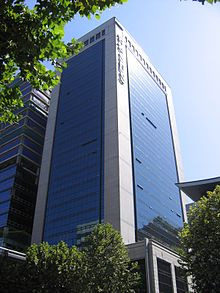

სამსუნგი (სამსუნგ გრუპი) — სამხრეთ კორეის ერთ-ერთი უმსხვილესი სამრეწველო კონცერნი. შეიქმნა 1938 წელს როგორც შიდა ბაზარზე მომუშავე ნედლეულისა და პროდუქტების კომპანია. კომპანია სამსუნგი ახლანდელმა ხელმძღვანელმა, დამაარსებლის უმცროსმა ვაჟმა, საერთაშორისო არენაზე 1980-იან წლებში გამოიყვანა. სამსუნგში მსოფლიო მასშტაბით 400 000-ზე მეტი ადამიანი მუშაობს. კომპანია აწარმოებს ავტომობილებს, თვითმფრინავებს, ტექსტილს, ხომალდებს, ქიმიკატებს, ელექტროტექნიკას, მობილურ ტელეფონებს, სასურსათო ნაწარმსა და სხვა. სამხრეთ კორეაში სამსუნგი ფინანსურ საქმიანობასაც ეწევა, აქვს სადაზღვევო კომპანიები. სამხრეთკორეულ ქალაქ სუვონს ხანდახან „სამსუნგ-სითისაც“ უწოდებენ. ქვეყანაში სამსუნგი უმსხვილესი კომპანიაა და საერთო ბიუჯეტის ნახევარს აყალიბებს. კომპანია სამსუნგ ელექთრონიქსი (Samsung Electronics) 1969 წელს დაარსდა, როგორც ფირმა სანიოს ტელევიზორების ამწყობი საამქრო, დღეისათვის კი სამსუნგ გრუპის უმსხვილესი წევრი და მსოფლიოს ერთ-ერთი უმძლავრესი საწარმო ელექტროტექნიკის წარმოებაში (3-ე ადგილზეა მსოფლიოში). 2006 წლიდან კომპანიის პროდუქცია „პრემიუმ“ კლასში გადავიდა. კომპანია 58 ქვეყანაშია განლაგებული და 208 000 მუშაკს აერთიანებს. სიტყვა სამსუნგი ჩინურ ენაზე „სამ ვარსკვლავს“ ნიშნავს და სანსინად წარმოითქმის. კორეულად კი ეს სიტყვა ჟღერს როგორც სამსონი და ერთობ გაურკვეველი, არაერთმნიშვნელოვანი ახსნა აქვს: ნათელი გზა ან სწრაფვა უკეთესობისკენ; ქართული დაწერილობა და წარმოთქმა საერთაშორისო ტრანსლიტერაციის ნორმების მიხედვით ხდება. დასახელება თავდაპირველად ჩინური იეროგლიფებით იწერებოდა, რაც სამ ვარსკვლავს ნიშნავს და ალბათ დამფუძნებლის — ლი ბენ-ჩოლის სამ ვაჟიშვილს უნდა გამოხატავდეს. (აქვე უნდა ითქვას, რომ კომპანიას ყველაზე უმცროსი ვაჟი უდგას სათავეში , რაც აღმოსავლური ტრადიციების უხეში დარღვევაა)
